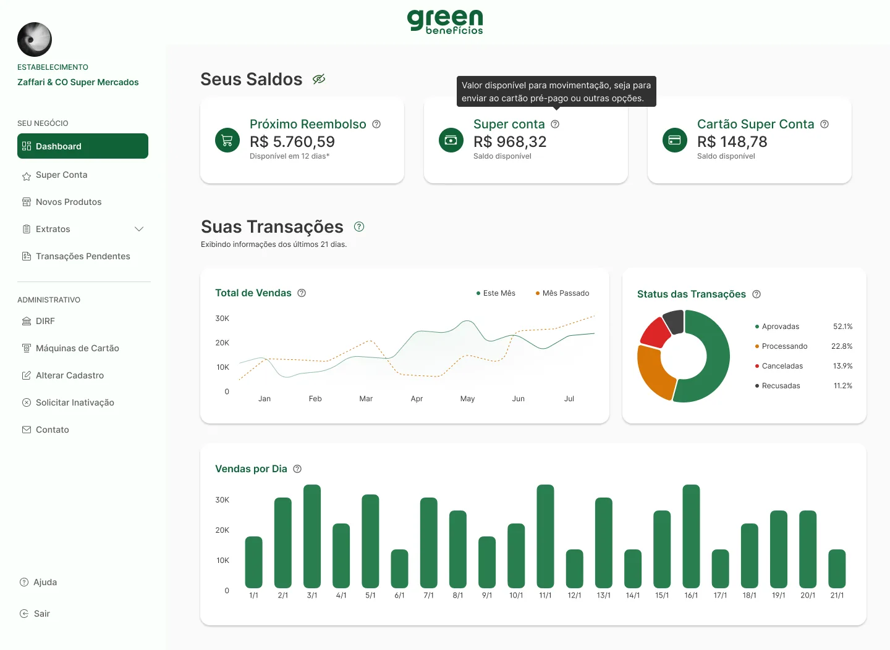

Green Benefícios | 2024
From Support Calls to Self-Service: Building the Establishment Portal
A network of 150,000 establishments was generating dozens of daily support calls for information that could, and should, have been available at their fingertips. I led the design from research to validated prototype.
- Company
- Green Benefícios
- My role
- Product Designer, end-to-end
- Team
- PO, Engineering, Marketing, Support, Design colleague
- Platform
- Web portal (B2B)
- Tools
- Figma, FigJam, Miro, Maze

The problem
Green Benefícios operates a network of 150,000 accredited establishments: the businesses where workers use their Green benefit card. Every transaction processed through the card triggers a 28-day reimbursement cycle. Green holds the funds and transfers them to the establishment after that period.
This model created a predictable pattern of confusion. Establishments had no visibility into their own financial data. No way to check when their reimbursement would arrive. No way to understand how much they'd receive. No way to register a new card machine without calling support.
The result: support teams were fielding an average of 15 calls per day about reimbursement status, each lasting around 5 minutes, plus 2 daily calls about card machine registration, each taking up to 20 minutes. That's over an hour of avoidable support work, every single day.
My role & constraints
What I owned
I investigated the problem through research, built the case for the product with stakeholders, and led design from discovery through a fully validated prototype. I also co-created the design system alongside a colleague from the worker-facing product team, so every Green product looked and behaved the same.
Constraints
Leadership did not want the platform to display Green's fee structure clearly to establishments. My position was that transparency builds trust, especially with a 28-day financial hold involved. I was outvoted. I documented my rationale, accepted the decision, and focused my energy on making everything else as clear and useful as possible.
Discovery & research
I started where the friction was most visible: the support team. Conversations with support agents and field creditors revealed a consistent pattern: establishments weren't confused about the product. They were simply kept in the dark about their own data.
I also ran competitive analysis to understand what similar platforms were offering and where the bar was set.
Three core needs emerged
Financial visibility
When is my reimbursement coming, and how much will it be?
Operational autonomy
How do I register a new card machine without calling anyone?
Clarity on the reimbursement model
Why does it take 28 days, and how are my fees calculated? Partially addressed: fees stayed opaque by business decision, but timelines and amounts became fully visible.
The design challenge
How might we give 150,000 establishments the financial visibility and operational autonomy they needed, reducing support load while building trust in a product that holds their money for 28 days?
Options I considered
Key decisions
Start with an MVP, not a full portal
I mapped all potential features and ran a prioritization exercise with the support team, creditors, and stakeholders. This produced a clear MVP scope and a design roadmap with defined milestones.
Co-creation sessions for sensitive topics
Where business interests and user needs were in tension, I ran structured co-creation sessions with the director of technology and marketing leads. Stakeholders became part of the process rather than gatekeepers at the end of it.
Jobs to be done as the organizing framework
I mapped each feature to a specific job the establishment needed to accomplish, so the portal stayed about tasks, not information dumps.
Validation before handoff
Two rounds of testing: qualitative sessions with 7 users and a Maze study with 15 participants. Several interactions that seemed clear in design were confusing in practice, especially the reimbursement timeline. Both rounds informed revisions before handoff to engineering.
The solution
A self-service web portal giving establishments real-time access to their financial and operational data. It was built alongside a shared design system developed with the worker-facing product team, so Green's products spoke the same visual language across all user types.
Reimbursement dashboard
Upcoming payment dates, amounts, and transaction breakdown.
Card machine management
Register, update, or remove machines without contacting support.
Account and contract information
Accessible without a support call.

Results & impact
I left during the final engineering phase. Establishments singled out reimbursement visibility as something they’d wanted for a long time.
That's great, now I know when I'll receive my money. It's very easy to use.
What I'd do differently
I'd fight harder for fee transparency, not indefinitely, but with a more structured argument. Looking back, I presented my position once in a meeting. What I should have done is return with user research data showing the direct correlation between financial opacity and support call volume. The business concern was protecting margin perception; my counter should have been framed around trust and churn risk. UX principles alone weren't going to win that room.
This project also taught me that identifying the problem is only half the job. The other half is building enough organizational trust that people let you solve it. The co-creation sessions did that work: stakeholders stopped approving the project and started building it with me.